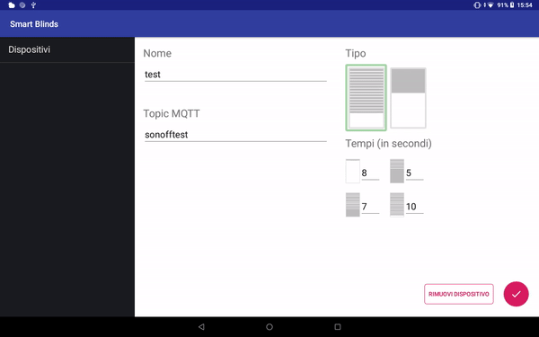
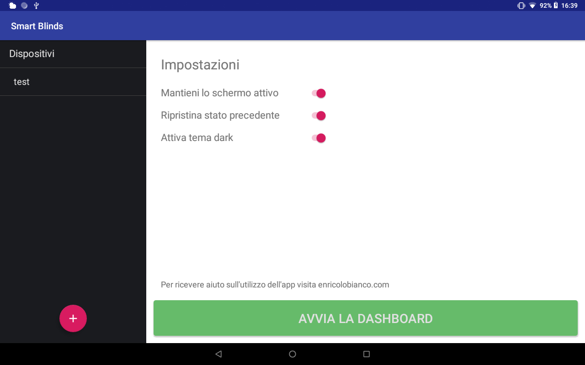
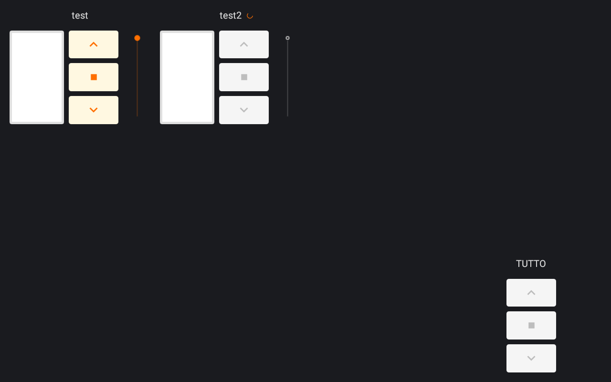

Automatizzare le tapparelle con Sonoff Dual
Terza Parte: Configurare la Dashboard
Ultima modifica: 28/01/2019
Il Sonoff è un dispositivo elettrico che usa alta tensione. Se siete incerti sul funzionamento e sul collegamento del Sonoff chiedete aiuto ad un elettricista esperto. Non mi assumo alcuna responsabilità per l'installazione dei materiali elettrici e per i suggerimenti forniti in questa pagina.
App Android
Scaricare l'app Android Smart Blinds per Sonoff Dual disponibile solo per tablet.
Questa applicazione implementa i due sistemi principali necessari al controllo dei Sonoff:
- Un broker MQTT che si comporta da server e riceve tutti i messaggi dai client (interruttori Sonoff);
- Una Dashboard che permette all'utente di interagire con i Sonoff per controllare le tapparelle.
L'app è pensata per dispositivi tablet perché la grandezza dello schermo è fondamentale per costruire una dashboard con più dispositivi collegati. Inoltre il tablet può essere sistemato a muro in modo da rendere più funzionale il suo utilizzo.
Il tablet e i Sonoff devono essere collegati alla stessa rete WiFi!
Configurazione MQTT sul Sonoff Dual
MQTT è un protocollo di messaggistica di tipo publish-subscribe di grande utilizzo nell'Internet of Things. Se volete approfondire il suo funzionamento cercate MQTT su Google.
Per preparare il Sonoff alla connessione accedete alla sua pagina web e navigate in Configurazione, quindi Configurazione MQTT.
- Host: Inserire l'indirizzo ip del tablet sul quale è stata installata l'app.
- Porta: Lasciare la porta di default 1883.
- Topic: Inserire una stringa che andrà a identificare questo particolare Sonoff all'interno dell'app.
ATTENZIONE: Per funzionare con l'app, il Topic deve essere composto da sole lettere minuscole! Ogni Sonoff deve avere un Topic differente. - Full Topic: E' importante che questo campo rimanga com'è di default.
Aggiunta di un nuovo dispositivo nell'app
Al primo avvio bisogna inserire i dispositivi Sonoff da controllare. Per iniziare è sufficiente cliccare sul tasto + in basso a sinistra. Ci apparirà questa schermata:

- Nome: Inserire un nome a piacere per identificare la tapparella.
- Topic MQTT: Inserire la stringa che è stata scelta nel passaggio precedente come Topic nella Configurazione MQTT del Sonoff.
- Tipo: L'app supporta due tipi di avvolgibili: le tapparelle con i fori e gli avvolgibili stile americano. Scegliere quello desiderato.
- Tempi: Questi sono i tempi di apertura e chiusura della tapparella. L'animazione aiuta a capire di quale tempo si tratta. A partire da sinistra verso destra e dall'alto verso il basso i tempi sono:
Tapparella con fori- Da aperta a chiusa con fori visibili (quando la tapparella tocca a terra)
- Da quando tocca a terra a completamente chiusa
- Da completamente chiusa a quando tocca a terra (fori visibili)
- Da quando tocca a terra a completamente aperta
Avvolgibile stile americano (non visibile nell'immagine)- Da completamente aperta a completamente chiusa
- Da completamente chiusa a completamente aperta
I tempi sono importanti per determinare la posizione della tapparella. Infatti l'app costruisce un'animazione della tapparella in modo che l'utente conosca il suo stato attuale semplicemente dando uno sguardo al tablet.
Misurare i tempi con un cronometro quindi inserire i valori nelle caselle corrispondenti. Approssimare il tempo misurato per eccesso. Ad esempio se misuro 10.35 secondi inserisco 11.
Avvio della Dashboard
Dopo aver aggiunto tutti i dispositivi ci ritroveremo con questa schermata:

Prima di avviare la Dashboard possiamo scegliere alcune impostazioni:
- Mantieni lo schermo attivo: Impedisce al tablet di entrare in modalità sospensione.
- Ripristina lo stato precedente: Viene memorizzata la posizione delle tapparelle in modo da ripristinarla in caso di chiusura e riapertura dell'app.
- Attiva tema dark: Cambia i colori della Dashboard.

All'avvio della dashboard c'è un breve periodo di caricamento durante il quale il tablet tenta di stabilire la connessione con i Sonoff. Nell'immagine sopra il dispositivo test si è connesso. Lo si nota dal colore dei pulsanti.
Il secondo dispositivo (inserito solo per dimostrazione) non si è connesso e i pulsanti rimarranno grigi fino a connessione avvenuta.
La configurazione è terminata. Al momento l'app consente l'aggiunta di massimo 11 dispositivi. Probabilmente questo limite verrà abbattuto con futuri aggiornamenti.
Scenario consigliato
Personalmente ho installato l'applicazione su un tablet e ho montato il tablet a muro.
Per simulare una vera e prorpia dashboard ho attivato lo screensaver dalle impostazioni di Android. Ecco una guida su come attivare lo screensaver sui dispositivi Android.
Nell'applicazione é fondamentale che l'impostazione Mantieni lo schermo attivo non sia spuntata. Le altre due impostazioni le potete spuntare o meno a seconda delle vostre esigenze.
In questo modo permettiamo al tablet di attivare lo screensaver dopo alcuni secondi di inattività. E per riattivare il tablet basterà un singolo tocco. Inoltre il tablet si riattiverà direttamente nell'applicazione.
Ho provato diverse combinazioni e ritengo che questa sia la più ottimale.
Continua a leggere: